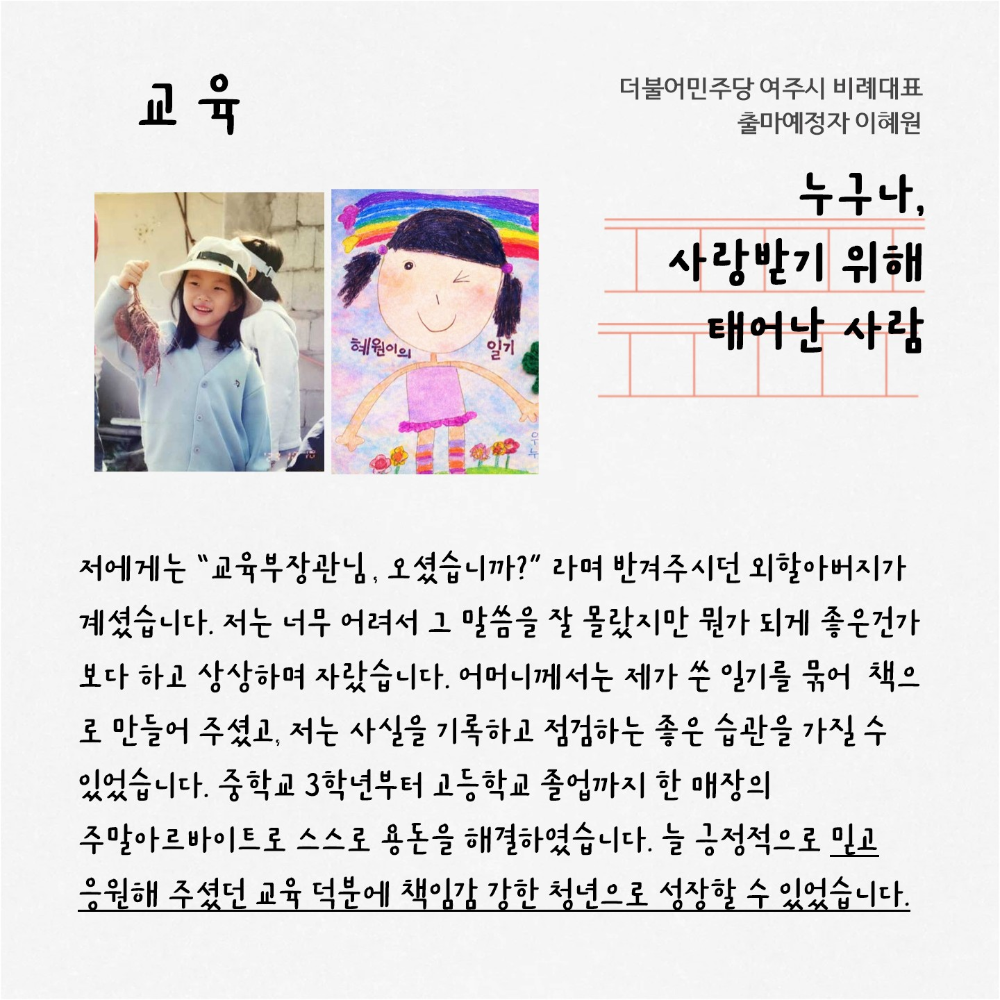
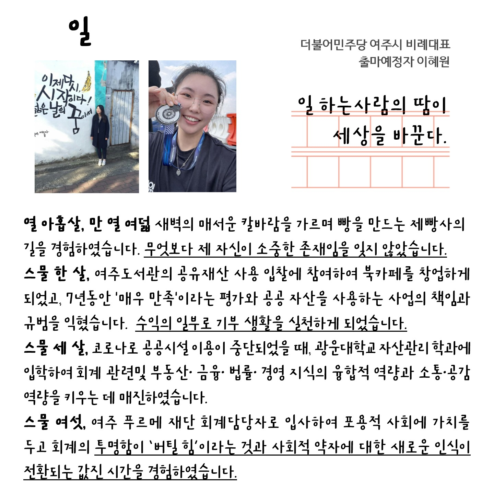
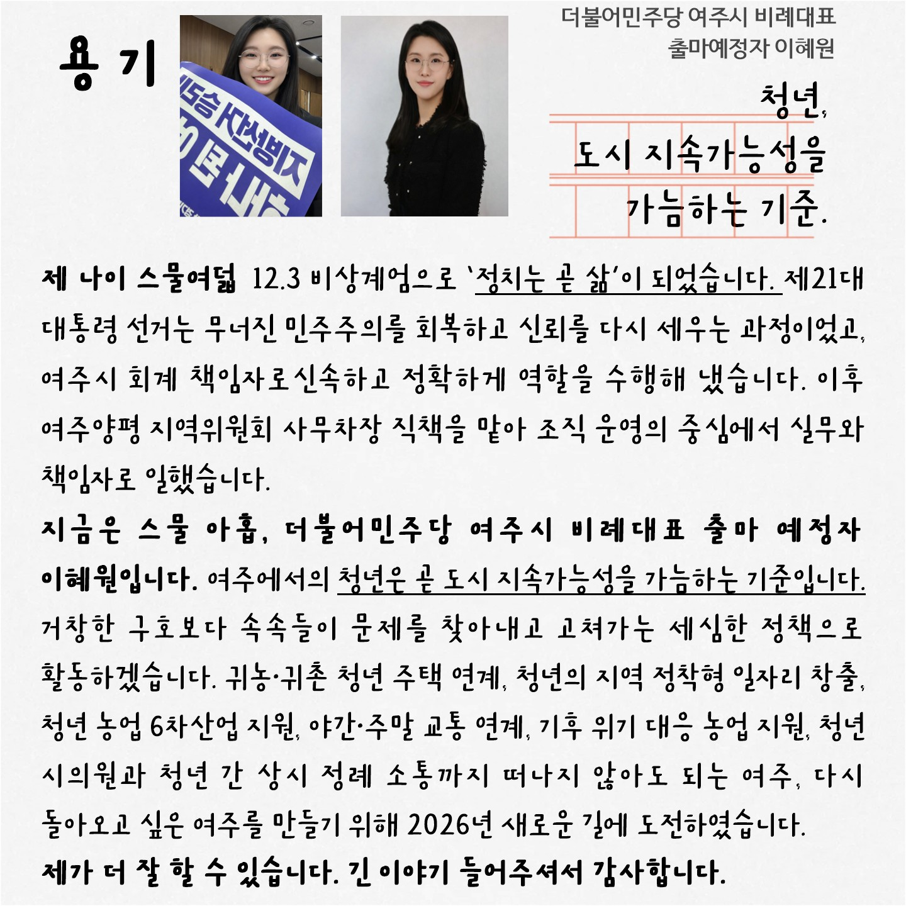

떠나지 않아도 되는 여주
다시 돌아오고 싶은 여주
더불어민주당 여주시 비례대표 출마예정자
여주청년 이혜원
🎥 소개영상 보기
📌 공약 확인하기
이혜원의 기준은 다릅니다



정치는 말이 아니라
결과로 증명하는 일입니다.
더불어민주당 여주시 정당선거사무소
회계책임자로 끝까지 결과를 만들어 본 사람입니다.
제 21대 대통령선거 이재명정부의 시작을 함께했습니다.
공공재산을 운영해 본 경험,
예산을 검증할 수 있는 실무, 현장에서 살아온 시간까지
준비는 끝났습니다.
떠나지 않아도 되는 여주,
다시 돌아오고 싶은 여주
여주청년 이혜원이 꼭 만들겠습니다.
핵심 공약
💰 투명한 예산·책임 행정
▼
시민의 세금이 제대로 쓰이도록 하겠습니다.
- 예산 집행 과정 공개 확대 및 투명성 강화 조례 추진
- 성과 중심 예산 심의 및 불필요한 사업 점검
- 시민참여예산제 활성화를 통한 직접 참여 확대
예산을 검증하는 시의원이 되겠습니다.
🏡 청년 정착 기반 구축
▼
청년이 여주에 정착할 수 있는 기반을 만들겠습니다.
- 청년 월세 지원 및 공공임대 연계 확대를 위한 조례 추진
- 귀농·귀촌 청년 주거 지원 정책 확대 요구
- 청년 정착 지원 예산 확보 및 지속성 강화
단기 지원이 아닌
“정착 구조를 만드는 정책”을 만들겠습니다.
🚛 지역 연계 일자리 확대
▼
여주 안에서 일할 수 있는 기반을 만들겠습니다.
- 청년 채용 기업 인센티브 확대를 위한 제도 개선 추진
- 지역 기업-청년 일자리 매칭 시스템 구축 요구
- 공공사업 내 청년 참여 확대 및 우선 반영
지역에서 일하고 성장하는 구조를 만들겠습니다.
🌱 청년 농업·6차 산업 육성
▼
농업을 미래 산업으로 키우겠습니다.
- 청년 농업인 창업 지원 및 스마트농업 예산 확대
- 생산·가공·유통 연계 6차 산업 정책 지원 강화
- 농산물 브랜드화 및 판로 확대 정책 추진
농업을 지속 가능한 산업으로 전환하겠습니다.
🌙 교통 취약시간 이동권 개선
▼
시민의 이동권을 강화하겠습니다.
- 야간·주말 버스 노선 확대를 위한 예산 반영 요구
- 수요응답형 교통(DRT) 확대 도입 추진
- 교통 취약지역 맞춤형 이동 서비스 정책 제안
이동권은 기본권이라는 기준으로 접근하겠습니다.
소개 영상
🔊
청년의 도전이 여주의 변화를 시작합니다
이혜원에게 힘을 모아주십시오
📞
▶
f